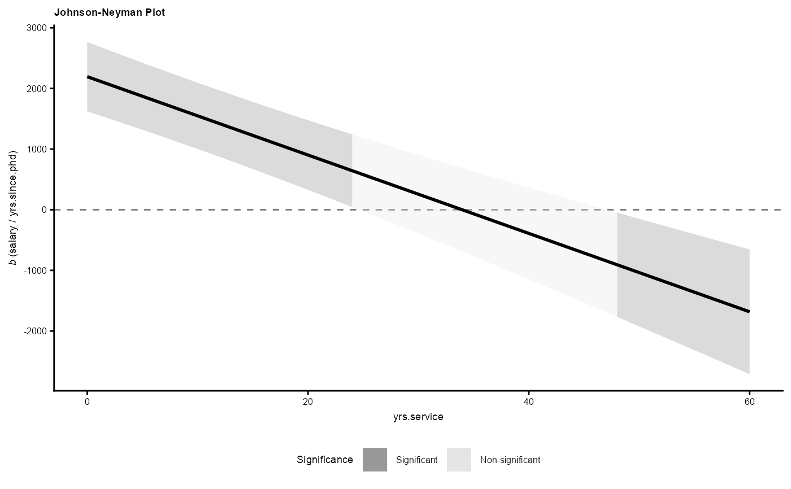
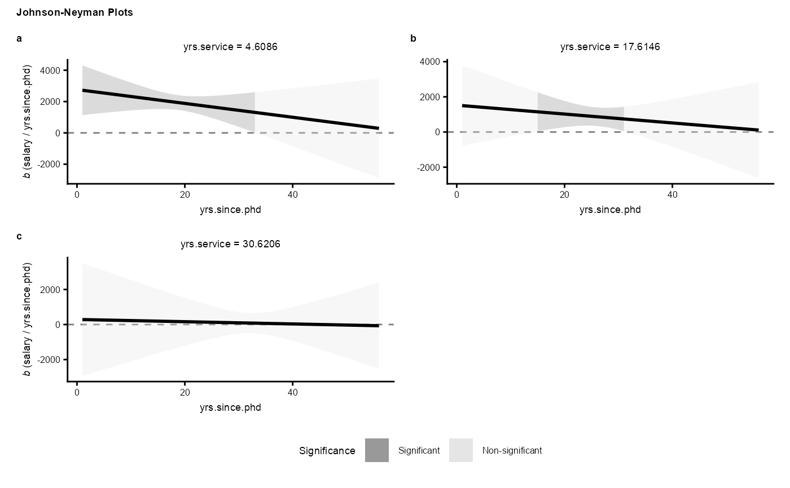

Plot Johnson-Neyman Data
Arguments
- x
An object of class
jn_df(the output fromgen_data_jn()).- scales
Character vector specifying whether facet scales should be
"fixed","free_y","free_x", or"free". Default is"fixed".- nrow
Number of rows in the facet grid. Default is
NULL.- ncol
Number of columns in the facet grid. Default is
NULL.- font_family
Font family name for the plot text. If
NULL(default), dynamically checks and uses"Arial", falling back to"Helvetica", then"sans".- legend.position
Character vector specifying the legend position:
"bottom"(default) or"right".- slope.symbol
Character vector specifying the symbol to represent the slope in the y-axis label:
"b"(italicized b, default),"beta"(italicized Greek beta),"bhat"(italicized b with a hat), or"betahat"(Greek beta with a hat).- x_digits
Integer specifying the number of decimal places for rounding the x-axis tick labels. Default is
NULL(no rounding).- y_digits
Integer specifying the number of decimal places for rounding the y-axis tick labels. Default is
NULL(no rounding).- x_scientific
Logical flag indicating whether to use clean plotmath scientific notation formatting for the x-axis tick labels. Default is
TRUE.- y_scientific
Logical flag indicating whether to use clean plotmath scientific notation formatting for the y-axis tick labels. Default is
TRUE.- ...
Additional arguments (not used).
See also
Other contrast or COPE helpers:
check_contrast_orthogonality(),
gen_contrast_blank(),
gen_contrast_ss(),
gen_data_jn(),
tidy_es_cope_F(),
tidy_es_cope_t()
Examples
# 1. Simple moderator example using real values
fit1 <- lm(salary ~ yrs.since.phd * yrs.service, data = carData::Salaries)
c1 <- gen_contrast_ss(
fit1,
x = "yrs.since.phd",
m = list(yrs.service = "real")
)
df_tidy_cope1 <- tidy_es(multcomp::glht(fit1, linfct = c1))
plot(gen_data_jn(df_tidy_cope1))

# 2. Multi-moderator polynomial example with free y scales and custom layout
fit2 <- lm(
salary ~ scale(yrs.since.phd, scale = FALSE) * scale(yrs.service, scale = FALSE) +
I(scale(yrs.since.phd, scale = FALSE)^2) * scale(yrs.service, scale = FALSE),
data = carData::Salaries
)
c2 <- gen_contrast_ss(fit2, x = "yrs.since.phd", m = list(yrs.since.phd = "real", yrs.service = "sd"))
df_tidy_cope2 <- tidy_es(multcomp::glht(fit2, c2), mcc = "none")
plot(gen_data_jn(df_tidy_cope2), scales = "free_y", nrow = 2)
